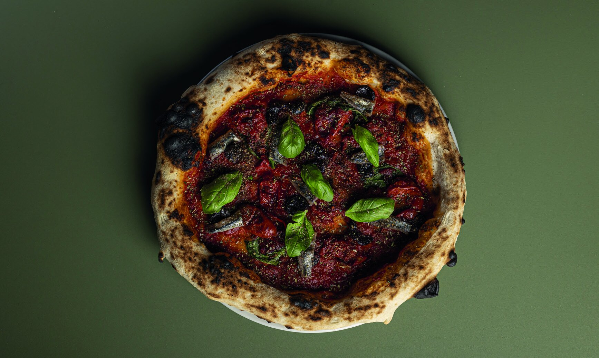
Marinara Bruciata
Datterino cotto per ore e "bruciato" in forno. Acciughe di Reggio Calabria, capperi in polvere, olive nere di Vibo Valentia, origano di montagna, olio all'aglio rosa di Nicastro.
DeGiuseppe nasce dall'incontro tra tecnica, ricerca e passione per i lievitati. Un percorso che unisce il rigore dell'alta cucina all'autenticità delle materie prime, per dare vita a un'offerta che esalta la semplicità con un tocco distintivo.

Prenota ora
VENERDÌ · SABATO
19:30 — 23:30
DOMENICA · PRANZO
12:30 — 15:00
DeGiuseppe Pizzeria
Calabria · Italia
+39 000 000 0000
Fai la conoscenza
Pasqualino De Giuseppe ha fondato nel 2013 il suo primo chiosco di street food "Viale Mancini — Boss Burger" dopo anni di esperienze e formazione presso Chef Fuoriclasse, sponsorizzata da Antonino Cannavacciuolo. Nel 2019 apre il suo primo ristorante. La pandemia cambia tutto: nasce la proposta gourmet.
Durante il lockdown approfondisce la panificazione con maestri come Francesco Di Salvo e Raffaele Bonetta, sviluppando topping innovativi per un'esperienza gastronomica distintiva.
Scopri di più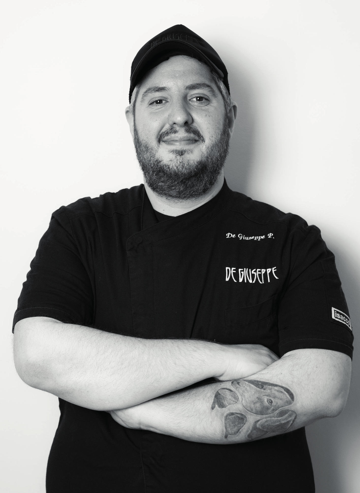
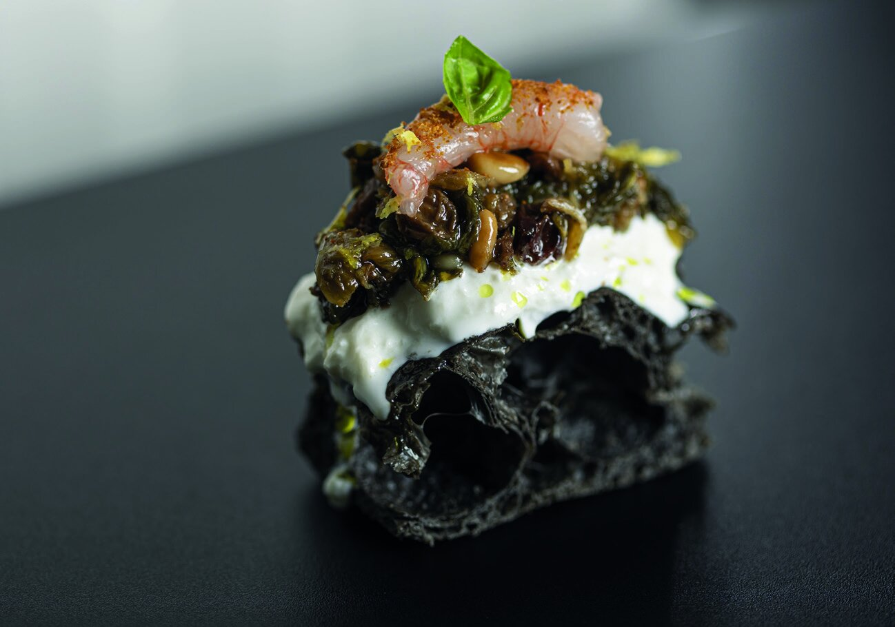
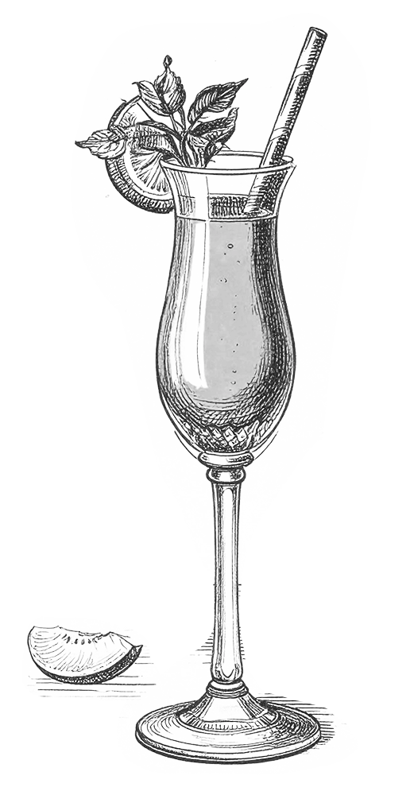
Nasce in Calabria, 2,5° — acqua pura della Sila e riso di Sibari. Naturalmente senza glutine, bassa fermentazione. Pensata per accompagnare, non sovrastare.
«Ogni dettaglio è pensato per offrire un'esperienza autentica, in cui la qualità degli ingredienti e il rispetto delle lavorazioni artigianali si fondono in piatti che sorprendono senza artifici. Un luogo dove la pizza, il pane e i lievitati diventano espressione di una cucina consapevole, fatta di memoria e innovazione.»
Pasqualino
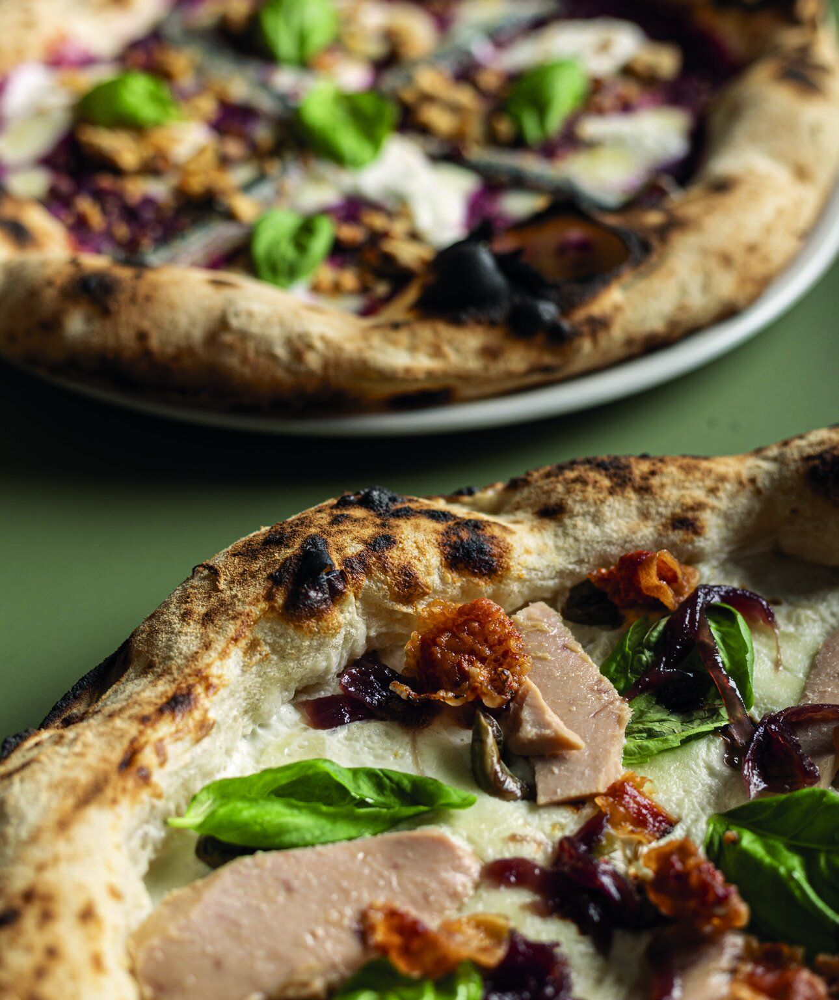
La nostra pizza
Incontro tra artigianalità, ricerca e tecnica. Fermentazioni prolungate, alte idratazioni e un impasto altamente digeribile per esaltare ogni condimento. Un classico reinterpretato con una visione personale.
Ogni pizza è narrazione, emozione e creatività — contrasti e armonie che sorprendono al palato.

Datterino cotto per ore e "bruciato" in forno. Acciughe di Reggio Calabria, capperi in polvere, olive nere di Vibo Valentia, origano di montagna, olio all'aglio rosa di Nicastro.
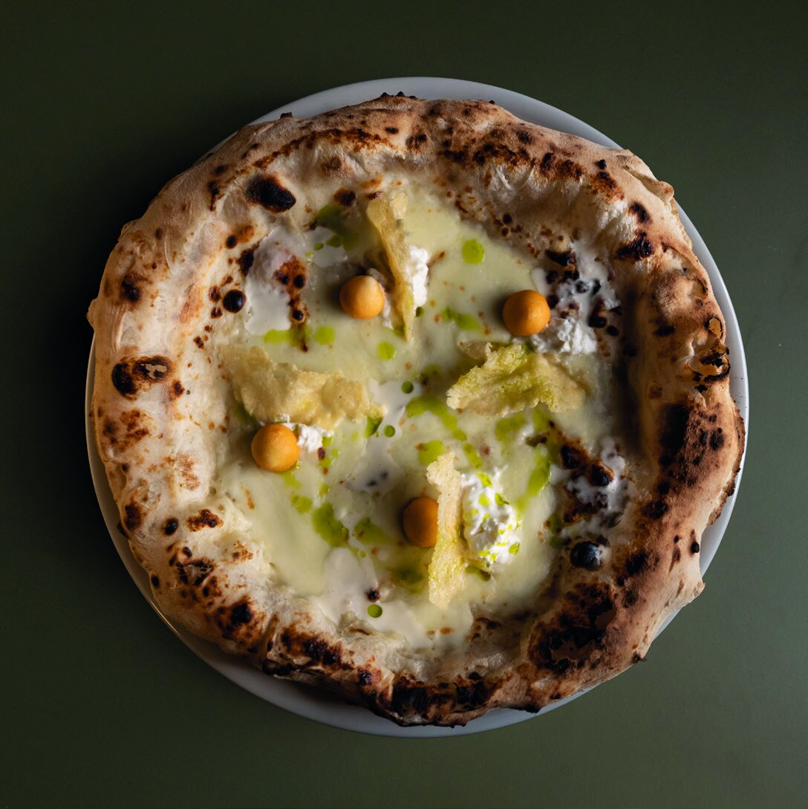
Fiordilatte, blu di capra Sant'Anna, cialde di vaccino stagionato 24 mesi, pops di pecorino del Monte Poro, stracciatella, EVO di Calabria.
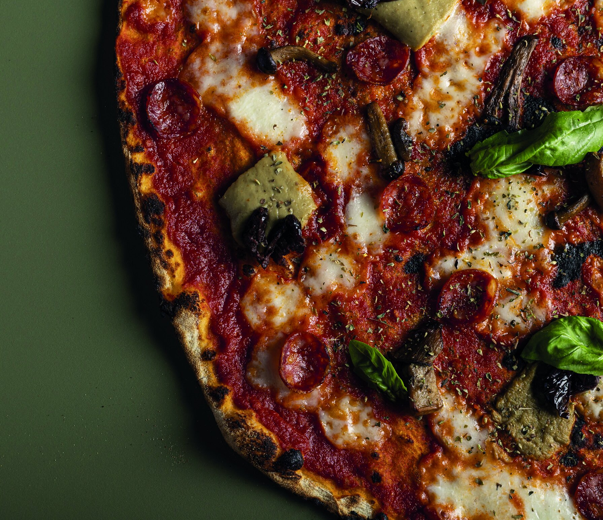
Conserva bio, fior di latte, carciofi saltati, shiitake, polvere di olive nere di Calabria, cotto di suino nero, basilico.
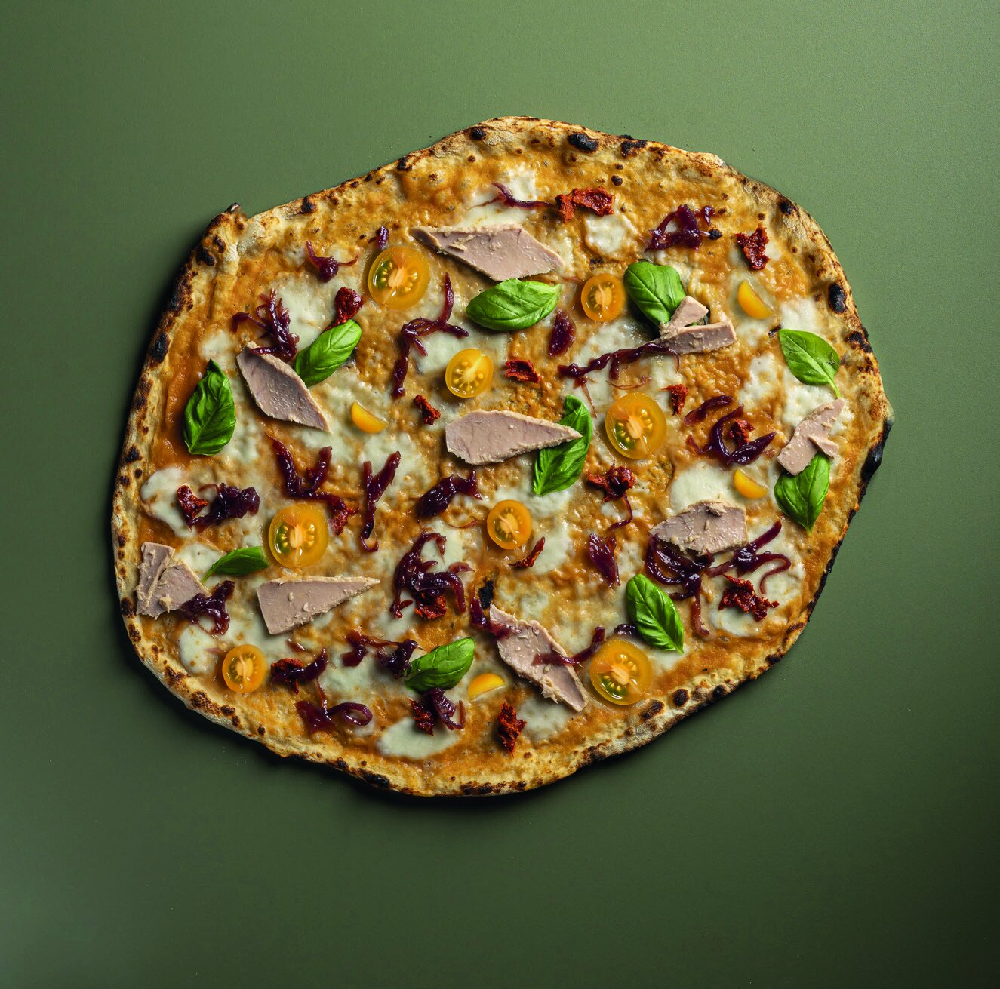
Pomodori gialli BIO, 'nduja di Spilinga, cipolla di Tropea caramellata, datterini gialli, filetti di tonno locale, basilico.
Bun fatto in casa
Un pane fatto da noi: struttura e gusto del bun sono determinanti quanto la farcitura. Combinazioni pensate per contrasti bilanciati e sapori leggibili.
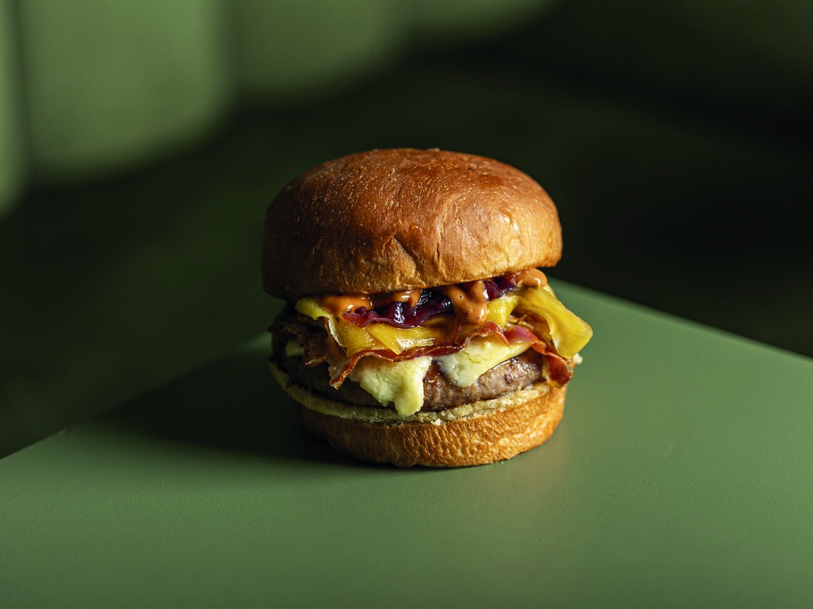
Bun, 180g di Podolica aspromontana, cheddar Amber Mist al whisky, doppia pancetta di suino nero, Tropea caramellata, mango acerbo in osmosi, salsa BBQ alla 'nduja.
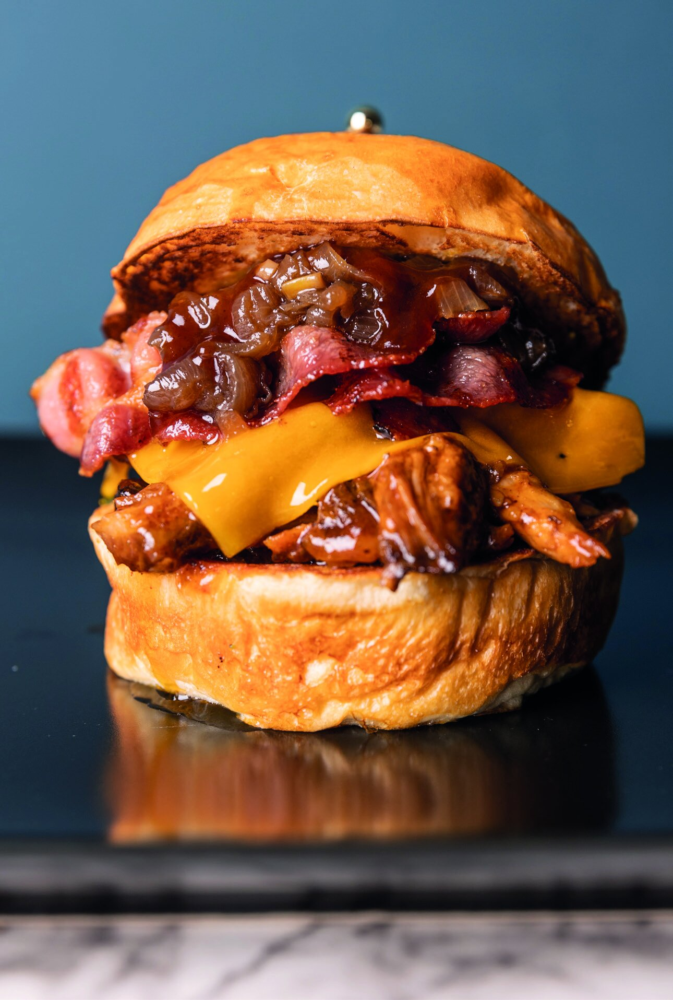
Costolette di suino nero disossate, cotte a bassa temperatura 7 ore, BBQ artigianale, pancetta, cheddar, Tropea caramellata. Classico bun o bao a vapore.
L'olio come racconto d'identità
L'olio extravergine è un ingrediente, non un condimento. Selezione da piccoli produttori, frantoi artigianali e realtà d'eccellenza — una mappa di aromi per ogni tipo di pizza.

Nocellara del Belice · Carolea. Per pizze leggere e vegetali.

Altanum I.G.P. · MICU 1906 Grand Cru. Per pizze strutturate.
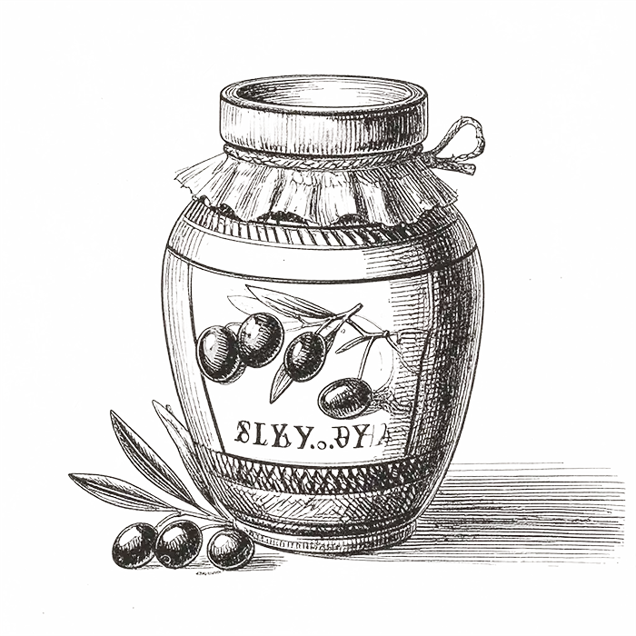
L'Ottobratica · Verace. Equilibrio armonico e firma territoriale.
Nuove pizze in carta, serate speciali, ospiti. Niente spam, solo lievitati.